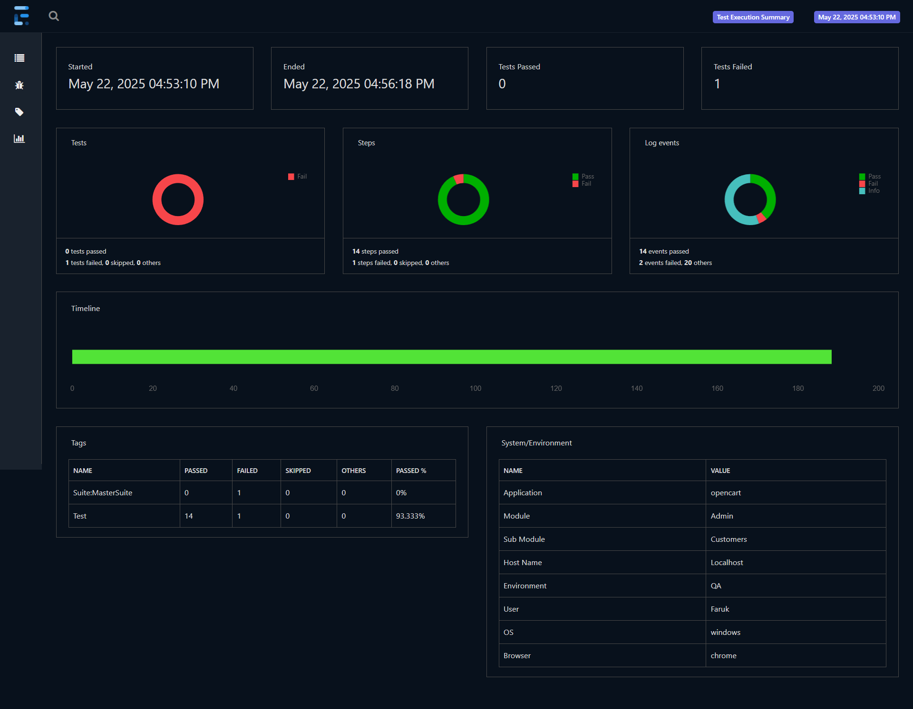

Showcase of test automation expertise, frameworks, and quality engineering practices
QA Automation and SDET Framework
This artifact demonstrates how modern automation architecture improves software release confidence through scalable test design, fast feedback loops, and quality-first engineering practices.
A practical portfolio of framework architecture, CI/CD integration, reporting evidence, and quantified outcomes from enterprise QA implementations.
Design and implement robust automation frameworks that reduce regression cycle time, increase test coverage, and improve delivery confidence.
Planned framework architecture, implemented test patterns, integrated CI/CD execution, and iteratively optimized scripts, reporting, and stability.
Playwright, Selenium WebDriver, Cucumber, TestNG, JUnit, TypeScript, Java, Jenkins, Bamboo, GitHub Actions, Postman, RestAssured, and Git.
Shows how quality engineering investments produce measurable business gains through faster feedback cycles, lower manual effort, and improved release reliability.
The artifact combines technical framework depth with measurable business outcomes, showing not only how the solution was built but why it improved delivery performance.
Relevant for QA leads, SDET managers, and engineering teams seeking automation practitioners who can design maintainable frameworks and drive operational impact.
Playwright and Selenium documentation, Cucumber BDD standards, CI/CD pipeline practices, and internal enterprise QA implementation reports.
Developed and deployed enterprise-scale test automation frameworks to reduce regression testing cycles, improve test coverage, and save significant operational costs. Showcases expertise in modern automation technologies (Playwright, Selenium), CI/CD integration, and AI-enhanced testing practices.
Framework Design: Architected scalable test automation frameworks using Playwright and Selenium with industry-standard patterns (Page Object Model, BDD). Strategy: Implemented data-driven testing, parallel execution, and cross-environment validation. CI/CD Integration: Built Jenkins and Bamboo pipelines for scheduled nightly runs, automated deployment verification. Optimization: Continuously refined scripts using AI tools (GitHub Copilot, ChatGPT) for faster development while maintaining quality standards.
Frameworks: Playwright, Selenium WebDriver, Cucumber (BDD), TestNG, JUnit. Languages: TypeScript, Java, Groovy, JavaScript. CI/CD: Jenkins, Bamboo, Maven, GitHub Actions. API Testing: Postman, RestAssured, Groovy Scripts. Data-Driven: Excel-based testing, SQL. Version Control: Git, GitHub, Bitbucket. AI Tools: GitHub Copilot, ChatGPT.
Technical: Test automation framework architecture, BDD/TDD, OOP principles, Page Object Model, API testing (REST/SOAP), data-driven testing, parallel execution, CI/CD pipeline configuration. Professional: Full SDLC/STLC knowledge, cross-functional collaboration (development, DevOps teams), requirement analysis, regression testing, defect management, performance optimization.
For Teams: Reduced regression testing cycles by 40%, 60% reduction in manual testing effort, 25% faster feedback to developers. For Business: $5K+ savings per regression test cycle execution, $50K annual licensing cost savings through optimization. For Innovation: Accelerated test development by 30% with AI tool integration while maintaining code quality standards.
Most valuable insight: Modern test automation is not just about faster execution- it's about enabling continuous delivery. AI-assisted development (Copilot, ChatGPT) dramatically accelerates framework creation without sacrificing quality. Key takeaway: Invest in robust frameworks with CI/CD from day one; the ROI compounds quickly.
Project 1: Playwright TypeScript Framework (HCL Technologies, Oct 2022 – Apr 2023)
Designed a modern, scalable Playwright framework using TypeScript with Page Object Model pattern. Implemented parallel test execution leveraging Playwright's built-in parallelization, reducing total test suite runtime by 40%. Integrated with Jenkins for daily scheduled runs and pull request validation. GitHub Copilot accelerated script development by 30%, while maintaining strict code quality standards.
Project 2: BDD Framework with Cucumber (Infosys, Jul 2017 – Oct 2020)
Architected a Selenium WebDriver-based BDD framework using Cucumber and Java for the FileNet ECM project. Business analysts could write test scenarios in Gherkin language, enabling non-technical stakeholders to understand test coverage. Configured Maven for dependency management and established Bamboo pipelines for continuous integration.
UI Automation: 85% test automation coverage across UAT, QA, and PROD environments for Quest Analytics platform using Playwright + TypeScript.
Data-Driven Testing: Excel-based data sources feeding automated test cases, enabling 35% increase in test coverage for critical business workflows.
API Testing: Groovy scripts for comprehensive REST/SOAP API testing, validating critical integration points between enterprise systems.
Cross-Environment Deployment: Automated test execution across DEV, QA, PROD via Jenkins job configurations, reducing manual overhead by 60%.
AI-Enhanced Development: GitHub Copilot integration for intelligent code suggestions, reducing script generation time significantly.
Reporting: Extent Reports and test dashboards providing stakeholders with real-time test coverage visibility and results.
HCL Technologies: Playwright framework with parallel execution
Quest Diagnostics: Full Quest Analytics platform automation
Jenkins automation across multiple environments
AI tool integration (GitHub Copilot + ChatGPT)
Excel-driven data approach at Quest Diagnostics
Per-cycle savings + cloud optimization
This QA report image represents the automation project I have worked on. It reflects my current framework execution outcomes and validation approach.

Status: Implemented in project work. Next Step: I am preparing to upgrade this framework with stronger reporting, additional coverage, and improved CI/CD reliability.
Framework Assets: Page Object Model structure, reusable test utilities, environment configuration files, and Jenkins/Bamboo job definitions.
Execution Assets: Daily run logs, Extent Reports, defect reports, and release-level regression summaries shared with teams.
This artifact directly demonstrates core course outcomes: software quality assurance, automation strategy, CI/CD integration, and data-driven validation. It applies foundational skills from SDLC/STLC, OOP-based framework design, and measurable quality engineering practices.
Technical Reviewers: QA leads, SDETs, and engineering managers evaluating framework scalability and maintainability.
Business Stakeholders: Product owners and delivery managers focused on release confidence, cycle-time reduction, and cost impact.
Title: QA Automation & SDET Framework.
Objective, Process, Tools, Value Proposition: Documented in Project Overview with quantified outcomes and professional evidence from enterprise implementations.
Throughout my QA automation journey across HCL Technologies, Infosys, and Quest Diagnostics, I've learned that test automation is not merely about executing tests faster - it's about building confidence in software delivery. Every framework I architected, every test case I refined, and every CI/CD pipeline I optimized was driven by a single mission: enabling teams to ship quality software at predictable cadences.
The transition from manual testing to test automation taught me that quality is a cultural mindset, not a phase. When business analysts write Gherkin scenarios in a BDD framework, developers understand what "done" means. When QA engineers design scalable frameworks with Page Object Model patterns, maintenance becomes effortless. When test execution runs in parallel across Jenkins pipelines, feedback cycles compress from days to hours.
The integration of AI tools - GitHub Copilot and ChatGPT - into my workflow demonstrated something profound: intelligent assistance amplifies human expertise without replacing it. These tools accelerated our script development by 30%, but only because we understood the underlying principles of test design, architecture, and intent. The magic isn't in the tool - it's in knowing what to build.
Looking forward, I see QA automation evolving toward autonomous intelligent testing systems. Yet the fundamentals remain constant: clear requirements, robust design, continuous feedback, and a commitment to quality. Whether I'm designing frameworks, optimizing data pipelines, or architecting AI systems, the principle is universal: invest in quality early, measure relentlessly, and iterate continuously. That philosophy has shaped my career, and it continues to guide every technical decision I make.